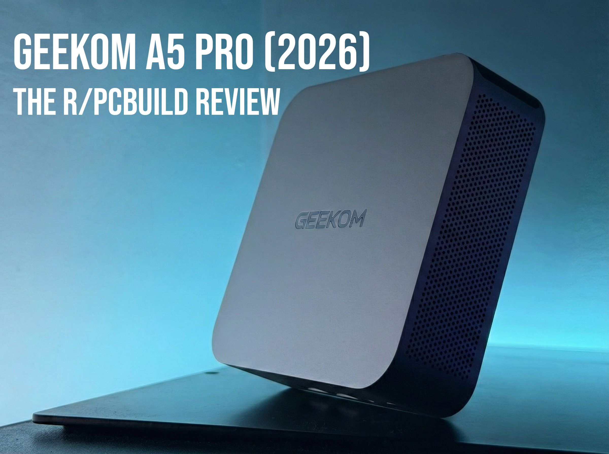

GEEKOM A5 Pro (2026)
GEEKOM’s Zen 3 Powered Workhorse
Who Am I?
I'm Bepsi. I'm one of the staff members here at r/PCBuild and the PC Help Hub (PCHH) Discord server. I usually keep to the Discord and lurk on Reddit. My passions lie in peripherals and PC hardware, and notably, servers and Mini PCs. I have multiple years of experience in the PC sphere, and I have previously reviewed audio gear and custom mice and dabbled in PC hardware (both tinkering and diagnosing).
Personal site: https://bepsi.dev/

Who is GEEKOM?
GEEKOM was founded in 2003, and over the past 23 years, they have become one of the well-known and well-respected players in the mini-PC market. Their focus is on green computing, engineering energy efficient, compact systems without compromising on performance or longevity. They stand out for their modular and upgradable systems (like this A5 Pro 2026) and are backed by AMD and Intel. Their systems are dependable and backed by a robust 3-year warranty.
01. Introduction
In the middle of “Ramageddon,” building even a basic PC has seen an exponential rise in pricing and limited availability, especially brand new. DRAM as a whole has seen over a 200% increase in price, impacting both SSDs and RAM, and it looks like it will only continue to climb as we get further into the year. Even building a new budget home server has risen in price to the point it can barely be called budget, and that includes small form factor media systems too.
Which is where GEEKOM comes in with the A5 Pro (2026 Edition). Out of the box, and for around $500, it comes with 16GB of upgradable DDR4 SODIMMs, a solid 1TB NVMe (also upgradable), and an absurdly nice all-aluminum build matched with a 3-year warranty and support. While most mini-PCs at this price point compromise in areas like build and cooling, this one does not.
02. Unboxing and First Impressions
The unboxing experience was fantastic: fast shipping, anti-tamper stickers, and high-grade packaging with segmented foam that keeps the A5 Pro safe. GEEKOM includes essentials: HDMI cable, compact power brick, and a VESA mount for an all-in-one monitor setup.
Taking the A5 Pro out, the first thing that strikes you is size. It is incredibly compact, measuring 11.2 x 11.2 x 3.6 cm, smaller than my desktop DAC (Topping DX5 II). Construction is one of the strongest points. Instead of a cheap injection-molded ABS shell, the A5 Pro is entirely aluminum, which creates a premium finish while also acting as a passive heatsink.
- • Front: Physical power button, 3.5mm audio jack, and two USB 3.2 Gen 2 Type-A ports (one supports Power Delivery for charging devices like phones).
- • Rear: Two HDMI 2.0 ports and two USB-C 3.2 ports capable of 10 Gbps transfer speeds.
One small gripe is the lack of an internal speaker. Even a basic one for Windows notification sounds would have been nice. Given the footprint, though, it is forgivable for most real-world use cases with external audio.
03. Teardown and Spec
Tearing down the A5 Pro is extremely easy. The rubber feet pop off and are reusable, thanks to small cutouts that slot back in. Underneath are four Phillips head screws, and the same screw type is used throughout teardown, which makes servicing straightforward.
Removing the bottom panel reveals a large metal shield that acts as a passive heat spreader for storage and networking components, complete with a thick thermal pad connecting the primary SSD to the shield.
The CPU is an AMD Ryzen 5 7530U, a 6-core, 12-thread mobile chip based on Zen 3. Yes, Zen 3 in 2026, but this is a positive for this use case. Zen 3 is mature, stable, and very well tested. For a machine expected to run 24/7, stable behavior matters more than chasing newer silicon with immature platform updates. I observed no stability issues at all.
The iGPU is Vega 7. It is sufficient for expected workloads: low power, surprisingly capable, and suitable for emulation and lighter AAA titles such as Forza Horizon 5.
- • RAM: 16GB (2x8GB) Kingston DDR4 in dual-channel at 3200 MT/s. Board supports up to 64GB.
- • Storage: 1TB Wodposit NVMe in the 2280 slot plus a secondary 2242 NVMe slot for expansion or dual-boot setups.
- • Networking: Realtek RTL8852BE Wi-Fi module is not soldered, so swapping to an Intel AX-210 later is possible.
04. Benchmarks
Out of the box, the software experience is clean: Windows 11 Pro with zero bloatware. I ran a full benchmark suite and compared against my current home server (i5-6600, 16GB DDR3L) and daily laptop (Core Ultra 7 155H, 32GB DDR5) as data points.
Geekbench 6
| Test System | Single Core | Multi Core |
|---|---|---|
| GEEKOM A5 Pro | 1,950 | 6,945 |
| Current Home Server (i5-6600) | 1,344 | 3,786 |
| MSI Prestige 13 A1M | 2,387 | 11,201 |
Cinebench 2024
| Test System | Single Core | Multi Core |
|---|---|---|
| GEEKOM A5 Pro | 85 | 398 |
| Current Home Server (i5-6600) | 58 | 215 |
| MSI Prestige 13 A1M | 102 | 531 |
Storage Benchmark (CrystalDiskMark)
| Speed Profile | Read | Write |
|---|---|---|
| Sequential | 3,720 MB/s | 3,407 MB/s |
| Random | 574 MB/s | 303 MB/s |
Gaming and Graphics Performance
This is not a gaming-first machine, but I tested lighter AAA titles and Minecraft to reflect realistic use:
Forza Horizon 5: 1080p Low Native: 33 FPS, 1080p Low FSR 2.1 Balanced: 29 FPS, 720p Low Native: 48 FPS, 720p High Native: 33 FPS. (Note: FSR 2.1 performed worse than native across repeated runs).
DiRT Rally 2.0: 1080p Low: 35 FPS, 720p Low: 60 FPS (inbuilt benchmark).
Minecraft (Vanilla): 1080p Fancy: 150 FPS, 1080p Fast: 200 FPS.
3DMark Steel Nomad Light: Score was 977, with consistent behavior and minimal dips.
05. Daily Driving and Creative Tasks
For creative workloads, expectations should be realistic: no dedicated GPU and no dedicated VRAM means it is not intended for heavy 4K rendering or complex 3D production.
That said, it is highly capable in 2D workflows. I used it for mousepad concept work in Adobe Photoshop with large canvases, multiple adjustment layers, and filters without issues. RAW photo touch-ups from my phone over USB-C also worked smoothly.
I also tested TinkerCAD with custom 3D-printed mouse shell work. Viewport responsiveness stayed strong, object interactions remained smooth, export was clean, and the system stayed stable over long sessions.
06. The Home Server Experience
Many SFF buyers run these as headless home servers. GEEKOM claims Linux support, so I tested with Ubuntu and Debian after partitioning the SSD. Installation was smooth and hardware compatibility was excellent out of the box.
The A5 Pro uses a Realtek 2.5GbE controller. Intel NICs are often preferred for virtualization edge cases, but I personally did not encounter packet handling or stability issues in my testing, aside from occasionally lower-than-expected Wi-Fi speeds.
To stress test, I hosted a modded Fabric Minecraft server. The 7530U held stable 20 TPS with active players generating chunks. Even with redstone stress tests, server behavior remained smooth.
I then ran Minecraft and Plex concurrently, streaming a 1080p movie and FLAC library to other devices. The A5 Pro handled all services at once without dropped packets, missed server ticks, or buffering.
I also ran Tailscale and AdGuard Home for remote access and network-wide ad blocking, with zero reliability issues during the test window.
07. Thermals, Acoustics, and Power Efficiency
Thermals are usually the biggest issue in mini-PCs, but the A5 Pro does well here. Because the 7530U is efficient, heat stayed controlled even under repeated benchmark runs.
Under full synthetic load, peak power draw stayed around 25W. At idle it sat under 5W, which makes it cost-effective for 24/7 server duty.
GEEKOM’s “IceBlast” cooling exhausts heat from the rear. Fan behavior remained tame: audible under heavier loads but never harsh or high-pitched, more of a gentle whir than a whine.
The aluminum chassis also helped keep external temperatures reasonable, generally warm to the touch instead of hot.
The Pros
- + Power efficiency: around 25W max under full load and sub-5W idle.
- + Build quality & modularity: aluminum chassis with upgradeable RAM, NVMe, and Wi-Fi.
- + Software profile: bloatware-free Windows 11 Pro image.
- + Linux compatibility: stable concurrent server workload behavior.
The Cons
- - No internal speaker for basic notification sounds.
- - Realtek networking may be less desirable than Intel for some advanced users.
8. Final Verdict
The GEEKOM A5 Pro is not for users chasing high-framerate AAA gaming. For users who want a compact, quiet desktop for office work, light 2D creation, or an efficient homelab foundation, it delivers stable and consistent performance. The mix of mature Zen 3 hardware, premium aluminum construction, and low power use makes it a practical and easy recommendation.